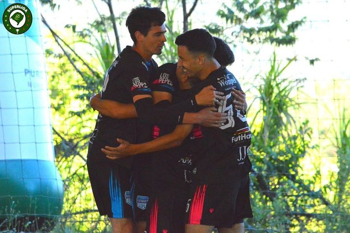

18/03/2023
No último jogo do dia 18/03/2023, o time branco levou a melhor e venceu o time preto por 11 a 8. A partida foi bastante movimentada e com muitos gols, com destaque para as atuações de Daniel e Jonas Bueno.
Time preto, Daniel da Silva abriu o placar aos 4 minutos de jogo, recebendo um belo passe de Lucas. Logo em seguida, Adriano ampliou o placar para o time preto, com passe de Maiky Wiliam. Aos 5 minutos, Lucas marcou o terceiro gol do time preto, novamente com passe de Maiky.
O time branco reagiu e conseguiu empatar o jogo em menos de 20 minutos, com gols de Luis Henrique e Wagner, ambos com passes de Jonas Bueno, e um gol solitário de Jonas Bueno. Matheus marcou o quarto gol do time branco aos 23 minutos, com passe de Luis Henrique.O time preto ainda conseguiu marcar mais dois gols no primeiro tempo, com Lucas recebendo passe de Daniel aos 25 minutos, e Daniel marcando seu segundo gol da partida aos 41 minutos, com passe de Cleverson. Mas o time branco não se abateu e marcou mais dois gols antes do fim do primeiro tempo, com Matheus recebendo passe de Jonas Bueno aos 37 minutos, e Wagner marcando um belo gol de falta aos 43 minutos.
No segundo tempo, o time branco continuou pressionando e marcou mais quatro gols, com destaque para as atuações de Jonas Bueno, que marcou mais dois gols, e de Matheus, que também marcou mais dois gols. Edson fechou o placar com um belo gol de falta de trivela aos 55 minutos.
O time preto ainda marcou mais dois gols no segundo tempo, com Daniel marcando seu terceiro gol da partida aos 61 minutos, com passe de Lucas Dieckel, e seu quarto gol aos 64 minutos, com passe de Cleverson.
Destaque para a atuação de Luiz, que foi o paredão do time branco e evitou diversos gols do time preto. Daniel foi o artilheiro da partida com 4 gols marcados, enquanto Adriano foi o pereba do time preto. Maiky Wiliam foi o xerifão do time preto, enquanto Jonas Bueno foi o garçom do time branco, dando duas assistências para gols.